24-nginx高级篇
一、日志切割(shell脚本)
nginx日志默认是不切割的，网站运行久了自然生成大量日志，导致单文件的处理，太麻烦，因此工作里一般定期切割，一般按天切割。
-rw-r--r-- 1 root root 2.1G May 8 13:57 front_access.log
1.shell脚本切割
1.查看当前的日志
[root@web-9 /var/log/nginx]#ls
access.log error.log error.movie.yuchaoit.log error.www.yuchaoit.log movie.yuchaoit.log www.yuchaoit.log
2.备份当前日志文件，请用rename改名即可
[root@web-9 /var/log/nginx]#ll
total 0
-rw-r--r-- 1 root root 0 May 8 14:31 error.log
-rw-r--r-- 1 root root 0 May 8 14:31 error.movie.yuchaoit.log
-rw-r--r-- 1 root root 0 May 8 14:31 error.www.yuchaoit.log
-rw-r--r-- 1 root root 0 May 8 14:31 movie.yuchaoit.log
-rw-r--r-- 1 root root 0 May 8 14:31 www.yuchaoit.log
[root@web-9 /var/log/nginx]#
[root@web-9 /var/log/nginx]#
[root@web-9 /var/log/nginx]#rename log log.$(date +%F) *.log
[root@web-9 /var/log/nginx]#ll
total 0
-rw-r--r-- 1 root root 0 May 8 14:31 error.log.2022-05-08
-rw-r--r-- 1 root root 0 May 8 14:31 error.movie.yuchaoit.log.2022-05-08
-rw-r--r-- 1 root root 0 May 8 14:31 error.www.yuchaoit.log.2022-05-08
-rw-r--r-- 1 root root 0 May 8 14:31 movie.yuchaoit.log.2022-05-08
-rw-r--r-- 1 root root 0 May 8 14:31 www.yuchaoit.log.2022-05-08
3.给nginx master进程发送USR1信号，等于重新打开日志记录
nginx -s reopen或者 kill -USR1 $(cat /var/run/nginx.pid)
4.试试重新生成日志
[root@web-9 /var/log/nginx]#
[root@web-9 /var/log/nginx]#kill -USR1 $(cat /var/run/nginx.pid)
[root@web-9 /var/log/nginx]#ll
total 0
-rw-r--r-- 1 www root 0 May 8 14:36 error.log
-rw-r--r-- 1 root root 0 May 8 14:31 error.log.2022-05-08
-rw-r--r-- 1 www root 0 May 8 14:36 error.movie.yuchaoit.log
-rw-r--r-- 1 root root 0 May 8 14:31 error.movie.yuchaoit.log.2022-05-08
-rw-r--r-- 1 www root 0 May 8 14:36 error.www.yuchaoit.log
-rw-r--r-- 1 root root 0 May 8 14:31 error.www.yuchaoit.log.2022-05-08
-rw-r--r-- 1 www root 0 May 8 14:36 movie.yuchaoit.log
-rw-r--r-- 1 root root 0 May 8 14:31 movie.yuchaoit.log.2022-05-08
-rw-r--r-- 1 www root 0 May 8 14:36 www.yuchaoit.log
-rw-r--r-- 1 root root 0 May 8 14:31 www.yuchaoit.log.2022-05-08
2.完整的脚本
[root@web-9 /etc/nginx]#cat cut_log.sh
#!/bin/bash
# 源日志目录
logs_path="/var/log/nginx"
# 备份日志目录
back_logs_path="${logs_path}/$(date -d 'yesterday' +'%F')"
# 创建备份目录，以日期命名，注意，每天零点整切割，开始记录新的一天的日志，备份目录应该是昨天
mkdir -p ${back_logs_path}
# 重命名旧日志名，注意日期
cd ${logs_path} && find . -type f |xargs -i mv {} {}.$(date -d 'yesterday' +'%F')
# 移动旧日志文件到该目录下
cd ${logs_path} && find . -type f |xargs -i mv {} ${back_logs_path}
# 重新生成新日志
kill -USR1 `cat /var/run/nginx.pid`
3.实践过程
1.你可以准备如下测试数据
[root@web-9 /var/log/nginx]#systemctl restart nginx
[root@web-9 /var/log/nginx]#ll
total 0
-rw-r--r-- 1 root root 0 May 8 15:17 error.log
-rw-r--r-- 1 root root 0 May 8 15:17 error.movie.yuchaoit.log
-rw-r--r-- 1 root root 0 May 8 15:17 error.www.yuchaoit.log
-rw-r--r-- 1 root root 0 May 8 15:17 movie.yuchaoit.log
-rw-r--r-- 1 root root 0 May 8 15:17 www.yuchaoit.log
2.修改日期到第二天0点
[root@web-9 /var/log/nginx]#date -s '2022-5-9 00:00'
Mon May 9 00:00:00 CST 2022
[root@web-9 /var/log/nginx]#date
Mon May 9 00:00:01 CST 2022
3.执行脚本
[root@web-9 /etc/nginx]#bash cut_log.sh
4.查看备份的日志
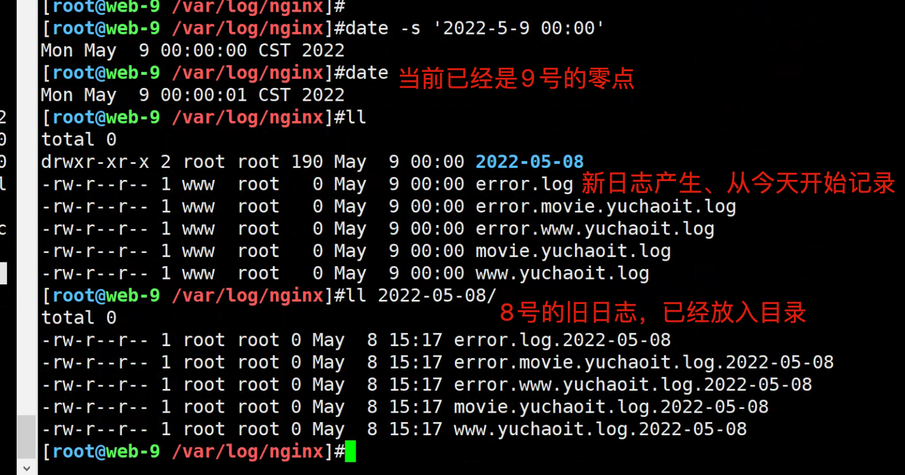
4.写入定时任务
[root@web-9 /etc/nginx]#crontab -l
* * * * * /usr/sbin/ntpdate time1.aliyun.com > /dev/null 2>&1
0 0 * * * /bin/bash /etc/nginx/cut_log.sh
二、日志切割（logrotate工具）
于超老师提示，清理上一次实验的环境。
shell脚本切割比较简单方便、nginx其实提供了更好用的工具
logrotate是一款自动切割日志的工具
1.检查logrotate
# rpm -qa 检查nginx的配置文件列表
[root@web-9 /etc/nginx]#rpm -qc nginx
/etc/logrotate.d/nginx
/etc/nginx/conf.d/default.conf
/etc/nginx/fastcgi_params
/etc/nginx/mime.types
/etc/nginx/nginx.conf
/etc/nginx/scgi_params
/etc/nginx/uwsgi_params
2.配置解释
[root@web-9 /etc/nginx]#cat /etc/logrotate.d/nginx
/var/log/nginx/*.log {
daily # 每天切割
missingok # 忽略错误
rotate 52 # 最多保留多少个存档
compress # 切割后且压缩
delaycompress # 延迟压缩动作在下一次切割
notifempty # 日志为空就不切割
create 640 nginx adm # 切割的文件权限
sharedscripts # 共享脚本，结果为空
postrotate # 收尾动作，重新生成nginx日志
if [ -f /var/run/nginx.pid ]; then
kill -USR1 `cat /var/run/nginx.pid`
fi
endscript # 结束动作
}
3.测试切割
1.创建压测工具，生成大量日志
yum install httpd-tools -y
2.可以先清空默认日志
3.模拟100个并发用户，共计发出10000个请求
ab -c 100 -n 10000 http://10.0.0.9/
4.检查日志记录
[root@web-9 /var/log/nginx]#ll
total 960
-rw-r--r-- 1 root root 0 May 8 15:41 error.log
-rw-r--r-- 1 root root 0 May 8 15:41 error.movie.yuchaoit.log
-rw-r--r-- 1 root root 0 May 8 15:41 error.www.yuchaoit.log
-rw-r--r-- 1 root root 900000 May 8 15:41 movie.yuchaoit.log
-rw-r--r-- 1 root root 0 May 8 15:41 www.yuchaoit.log
[root@web-9 /var/log/nginx]#cat movie.yuchaoit.log |wc -l
10000
5.主动切割日志
[root@web-9 /var/log/nginx]#logrotate -f /etc/logrotate.d/nginx
[root@web-9 /var/log/nginx]#ll
total 880
-rw-r--r-- 1 www root 0 May 8 15:41 error.log
-rw-r--r-- 1 www root 0 May 8 15:41 error.movie.yuchaoit.log
-rw-r--r-- 1 www root 0 May 8 15:41 error.www.yuchaoit.log
-rw-r----- 1 www adm 0 May 8 15:41 movie.yuchaoit.log
-rw-r--r-- 1 root root 900000 May 8 15:41 movie.yuchaoit.log.1
-rw-r--r-- 1 www root 0 May 8 15:41 www.yuchaoit.log
6.会发现当前并没有压缩，只有下一次切割才会压缩
7.修改系统时间，模拟到了第二天
[root@web-9 /var/log/nginx]#date -s '20220509'
Mon May 9 00:00:00 CST 2022
[root@web-9 /var/log/nginx]#date +%F
2022-05-09
8.再次创建大量日志（否则空日志不会切割）
[root@master-61 ~]#ab -c 100 -n 10000 http://10.0.0.9/
9.再次查看日志
[root@web-9 /var/log/nginx]#ll
total 1840
-rw-r--r-- 1 www root 0 May 8 15:45 error.log
-rw-r--r-- 1 www root 0 May 8 15:45 error.movie.yuchaoit.log
-rw-r--r-- 1 www root 0 May 8 15:45 error.www.yuchaoit.log
-rw-r----- 1 www adm 900000 May 9 00:00 movie.yuchaoit.log
-rw-r--r-- 1 root root 900000 May 8 15:45 movie.yuchaoit.log.1
-rw-r--r-- 1 www root 0 May 8 15:45 www.yuchaoit.log
10.开始切割，查看日志压缩情况
[root@web-9 /var/log/nginx]#logrotate -f /etc/logrotate.d/nginx
[root@web-9 /var/log/nginx]#ll
total 884
-rw-r--r-- 1 www root 0 May 8 15:45 error.log
-rw-r--r-- 1 www root 0 May 8 15:45 error.movie.yuchaoit.log
-rw-r--r-- 1 www root 0 May 8 15:45 error.www.yuchaoit.log
-rw-r----- 1 www adm 0 May 9 00:00 movie.yuchaoit.log
-rw-r----- 1 www adm 900000 May 9 00:00 movie.yuchaoit.log.1
-rw-r--r-- 1 root root 3179 May 8 15:45 movie.yuchaoit.log.2.gz
-rw-r--r-- 1 www root 0 May 8 15:45 www.yuchaoit.log
11.写入定时任务，即可按天切割且压缩nginx日志了
[root@web-9 /var/log/nginx]#crontab -l
01 00 * * * /usr/sbin/logrotate -f /etc/logrotate.d/nginx >> /var/log/nginx/logrotate_nginx.log 2>&1
三、目录索引、文件下载服务
官网文档
http://nginx.org/en/docs/http/ngx_http_autoindex_module.html
利用nginx实现文件下载服务器
1.参数说明
Syntax: autoindex on | off;
Default:
autoindex off;
Context: http, server, location
# autoindex on ； 表示开启目录索引
Syntax: autoindex_localtime on | off;
Default:
autoindex_localtime off;
Context: http, server, location
# autoindex_localtime on; 显示文件为服务器的时间
Syntax: autoindex_exact_size on | off;
Default:
autoindex_exact_size on;
Context: http, server, location
# autoindex_exact_size on; 显示确切bytes单位
# autoindex_exact_size off; 显示文件大概单位，是KB、MB、GB
若目录有中文，nginx.conf中添加utf8编码
charset utf-8,gbk;
2.配置文件
测试数据
[root@web-9 /var/log/nginx]#dd if=/dev/zero of=/yuchaoit/牛啊牛啊.log^C
[root@web-9 /var/log/nginx]#ll /yuchaoit/ -h
total 236M
-rw-r--r-- 1 root root 236M May 8 16:06 牛啊牛啊.log
-rw-r--r-- 1 root root 0 May 8 16:04 男宾10号.png
-rw-r--r-- 1 root root 0 May 8 16:04 男宾1号.png
-rw-r--r-- 1 root root 0 May 8 16:04 男宾2号.png
-rw-r--r-- 1 root root 0 May 8 16:04 男宾3号.png
-rw-r--r-- 1 root root 0 May 8 16:04 男宾4号.png
-rw-r--r-- 1 root root 0 May 8 16:04 男宾5号.png
-rw-r--r-- 1 root root 0 May 8 16:04 男宾6号.png
-rw-r--r-- 1 root root 0 May 8 16:04 男宾7号.png
-rw-r--r-- 1 root root 0 May 8 16:04 男宾8号.png
-rw-r--r-- 1 root root 0 May 8 16:04 男宾9号.png
单独生成子配置文件，专用于下载
cat >/etc/nginx/conf.d/download.conf <<EOF
server{
listen 8888;
server_name localhost;
charset utf-8,gbk;
location / {
root /yuchaoit/;
autoindex on;
autoindex_localtime on;
autoindex_exact_size off;
}
}
EOF
重启，查看结果
systemctl restart nginx
3.访问目录索引
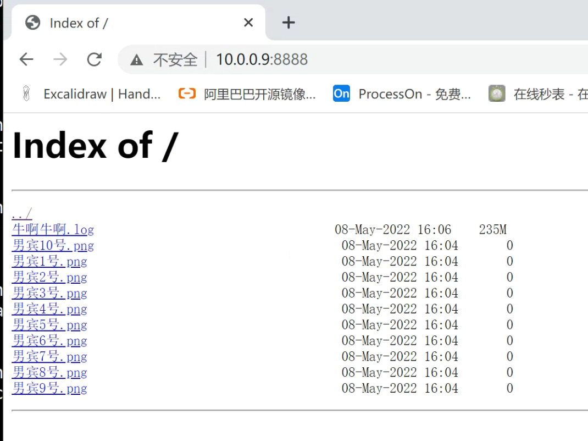
四、连接数监控
官网文档
http://nginx.org/en/docs/http/ngx_http_stub_status_module.html 模块介绍
该ngx_http_stub_status_module模块提供对基本状态信息的访问。
默认情况下不构建此模块，应使用 --with-http_stub_status_module 配置参数启用它。
Nginx状态信息（status）介绍 Nginx软件在编译时又一个with-http_stub_status_module模块，这个模块功能是记录Nginx的基本访问状态信息，对于想了解nginx的状态以及监控nginx非常有帮助。
让使用者了解Nginx的工作状态。
要想使用状态模块，在编译时必须增加--with-http_stub_status_module参数。
1.参数解释
Active connections
当前活动客户端连接数，包括Waiting连接数。
accepts
接受的客户端连接总数。
handled
处理的连接总数。
accepts 通常，除非已达到某些资源限制（例如， worker_connections限制） ，否则该参数值相同。
requests
客户端请求的总数。
Reading
nginx 正在读取请求标头的当前连接数。
Writing
nginx 将响应写回客户端的当前连接数。
Waiting
当前等待请求的空闲客户端连接数。
# 注意
一个tcp连接，可以发起多个http请求
可以通过修改保持连接参数修改
keepalive_timeout 0; 表示关闭长连接
2.看下你的nginx支持这个模块吗
nginx -V
3.配置文件
cat >/etc/nginx/conf.d/status.conf<<EOF
server{
listen 9999;
server_name localhost;
stub_status on;
access_log off;
}
EOF
重启
[root@web-9 /var/log/nginx]#systemctl restart nginx
4.访问状态
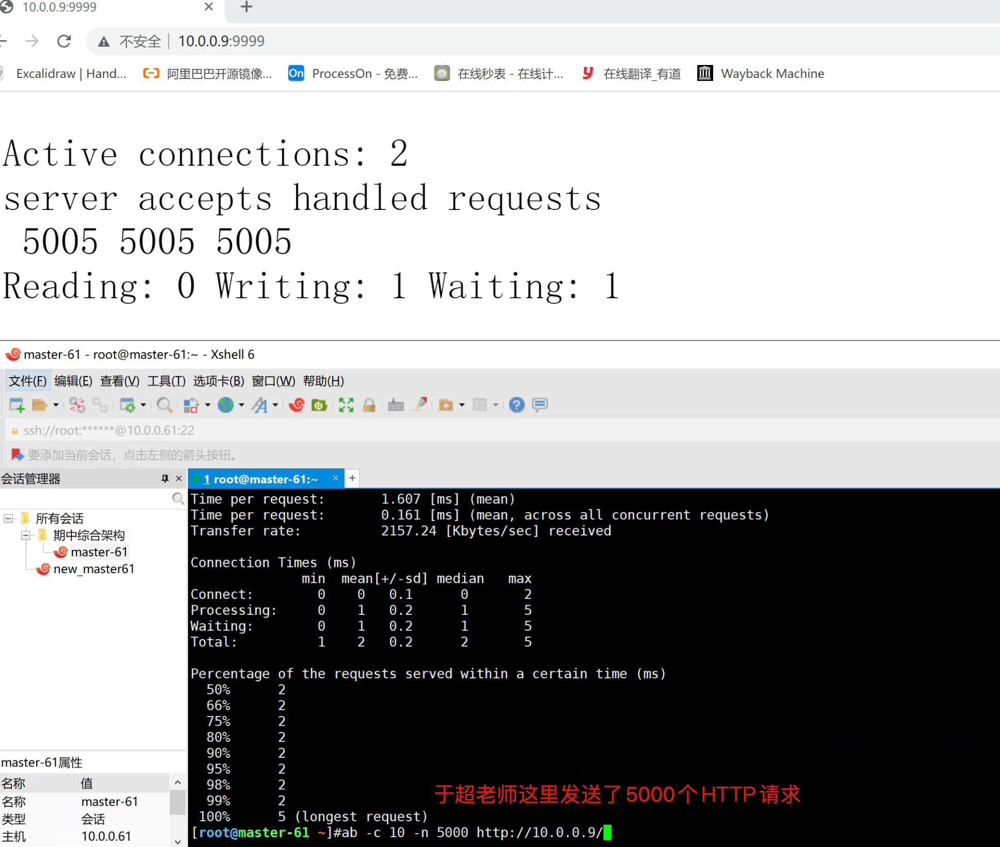
五、基于IP的访问限制
模块
http://nginx.org/en/docs/http/ngx_http_access_module.html
1.配置语法
句法： allow address | CIDR | unix: | all;
默认： —
语境： http, server, location,limit_except
允许访问指定的网络或地址。如果指定了特殊值unix:(1.5.1)，则允许访问所有 UNIX 域套接字。
句法： deny address | CIDR | unix: | all;
默认： —
语境： http, server, location,limit_except
拒绝对指定网络或地址的访问。如果指定了特殊值unix:(1.5.1)，则拒绝所有 UNIX 域套接字的访问。
2.拒绝windows访问www域名
[root@web-9 /etc/nginx/conf.d]#cat www.yuchaoit.conf
server {
listen 80;
server_name www.yuchaoit.cn;
charset utf-8;
access_log /var/log/nginx/www.yuchaoit.log;
error_log /var/log/nginx/error.www.yuchaoit.log;
error_page 404 /404.html;
location / {
root /usr/share/nginx/html/game;
index index.html index.htm;
deny 10.0.0.1;
allow all;
}
error_page 500 502 503 504 /50x.html;
location = /50x.html {
root /usr/share/nginx/html;
}
}
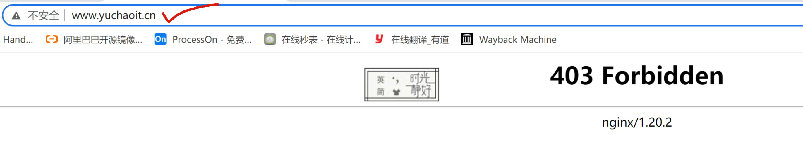
但是虚拟机，走内网环境是可以通的。
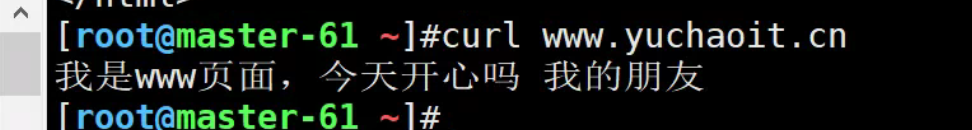
3.只允许windows访问，其他人拒绝
注意allow和deny的加载顺序是，自上而下加载；
[root@web-9 /etc/nginx/conf.d]#cat www.yuchaoit.conf
server {
listen 80;
server_name www.yuchaoit.cn;
charset utf-8;
access_log /var/log/nginx/www.yuchaoit.log;
error_log /var/log/nginx/error.www.yuchaoit.log;
error_page 404 /404.html;
location / {
root /usr/share/nginx/html/game;
index index.html index.htm;
allow 10.0.0.1;
deny all;
}
error_page 500 502 503 504 /50x.html;
location = /50x.html {
root /usr/share/nginx/html;
}
}
windows可访问
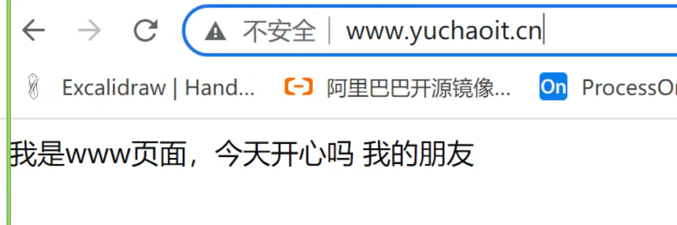
linux不可访问
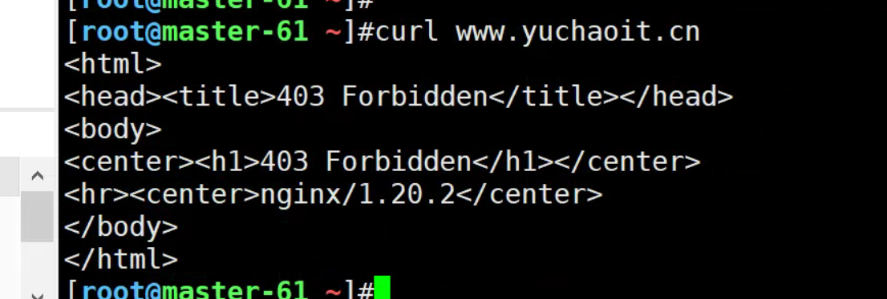
六、基于用户认证的访问限制
有时候，我们一些站点内容想要进行授权查看，只能输入账号密码之后才能访问，例如一些重要的内网平台，CRM，CMDB，企业内部WIKI等等。
1.语法
https://nginx.org/en/docs/http/ngx_http_auth_basic_module.html
句法： auth_basic string | off;
默认：
auth_basic 关闭；
语境： http, server, location,limit_except
启用使用“HTTP 基本身份验证”协议验证用户名和密码。
指定的参数用作realm. 参数值可以包含变量（1.3.10、1.2.7）。
特殊值off取消了auth_basic从先前配置级别继承的指令的效果。
句法： auth_basic_user_file file;
默认： —
语境： http, server, location,limit_except
2.创建密码文件
htpasswd是Apache密码生成工具，Nginx支持auth_basic认证，因此我门可以将生成的密码用于Nginx中，输入一行命令即可安装：
yum -y install httpd-tools
参数
-c 创建passwdfile.如果passwdfile 已经存在,那么它会重新写入并删去原有内容.
-b 命令行中一并输入用户名和密码而不是根据提示输入密码，可以看见明文，不需要交互
#创建认证文件，htpasswd -bc .access username password
#在当前目录生成.access文件，用户名username，密码：password，默认采用MD5加密方式。
具体操作
[root@web-9 ~]#htpasswd -b -c /etc/nginx/auth_passwd yuchao01 yuchao666
Adding password for user yuchao01
3.nginx调用密码文件
[root@web-9 ~]#cat /etc/nginx/conf.d/www.yuchaoit.conf
server {
listen 80;
server_name www.yuchaoit.cn;
charset utf-8;
access_log /var/log/nginx/www.yuchaoit.log;
error_log /var/log/nginx/error.www.yuchaoit.log;
error_page 404 /404.html;
location / {
root /usr/share/nginx/html/game;
index index.html index.htm;
auth_basic "yuchaoit.cn welcomes you";
auth_basic_user_file /etc/nginx/auth_passwd;
}
error_page 500 502 503 504 /50x.html;
location = /50x.html {
root /usr/share/nginx/html;
}
}
4.访问测试
只有www.yuchaoit.cn站点被加了密码。
其他未设置认证的可以直接访问。
七、nginx请求限制
1.官网模块
https://nginx.org/en/docs/http/ngx_http_limit_req_module.html
2.配置语法
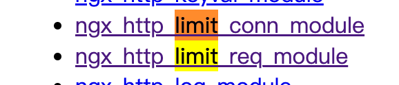
限速规则语法
https://docshome.gitbook.io/nginx-docs/he-xin-gong-neng/http/ngx_http_limit_req_module
ngx_http_limit_req_module 模块（0.7.21）用于限制每个已定义 key 的请求处理速率，特别是来自单个 IP 地址请求的处理速率。限制机制采用了 leaky bucket （漏桶算法）方法完成。
3.参数示例
# 1.定义一个限速规则
# 定义限速区域，保持在10兆字节的区域one，该区域的平均处理请求每秒不能超过1个。
# $binary_remote_addr 变量的大小始终为 4 个字节，在64位机器上始终占用64字节
limit_req_zone $binary_remote_addr zone=one:10m rate=1r/s;
limit_req_zone $binary_remote_addr zone=two:10m rate=1r/s;
参数解释
limit_req_zone # 引用限速模块
binary_remote_addr # 判定条件，远程的客户端IP
zone # 定义限速区域名称，内存大小
rate # 限速规则，1秒只能1个请求
# 2.引用限速规则
limit_req zone=two burst=5;
limit_req # 引用哪一个限速区域
burst=5 # 令牌桶、平均每秒不超过 1 个请求，并且突发不超过5个请求。
nodelay # 如果不希望排队堆积的请求过多，可以用这个参数。
4.实际用法
- 限速规则是1秒一个请求
- 提供3个vip特殊名额
[root@web-9 /etc/nginx/conf.d]#cat www.yuchaoit.conf
limit_req_zone $binary_remote_addr zone=one:10m rate=1r/s;
server {
listen 80;
server_name www.yuchaoit.cn;
charset utf-8;
access_log /var/log/nginx/www.yuchaoit.log;
error_log /var/log/nginx/error.www.yuchaoit.log;
error_page 404 /404.html;
limit_req zone=one burst=3 nodelay;
location / {
root /usr/share/nginx/html/game; index index.html index.htm;
}
error_page 500 502 503 504 /50x.html;
location = /50x.html {
root /usr/share/nginx/html;
}
}
5.访问测试
正常限速内
[root@master-61 ~]#for i in {1..10};do curl -I www.yuchaoit.cn;sleep 1;done
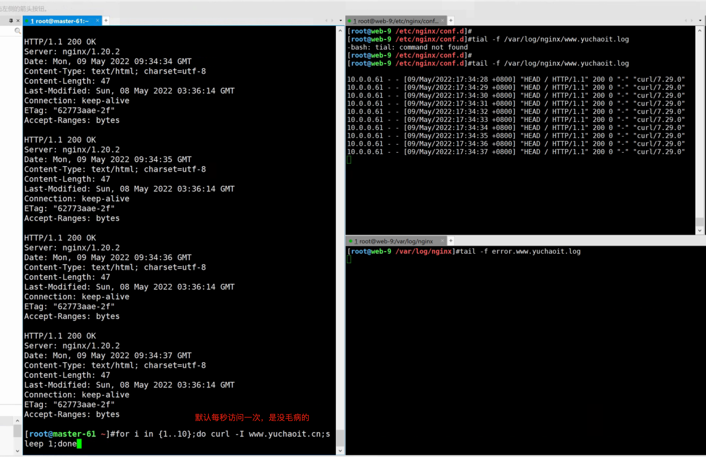
超速访问情况
[root@master-61 ~]#for i in {1..20};do curl -I www.yuchaoit.cn;sleep 0.5 ;done
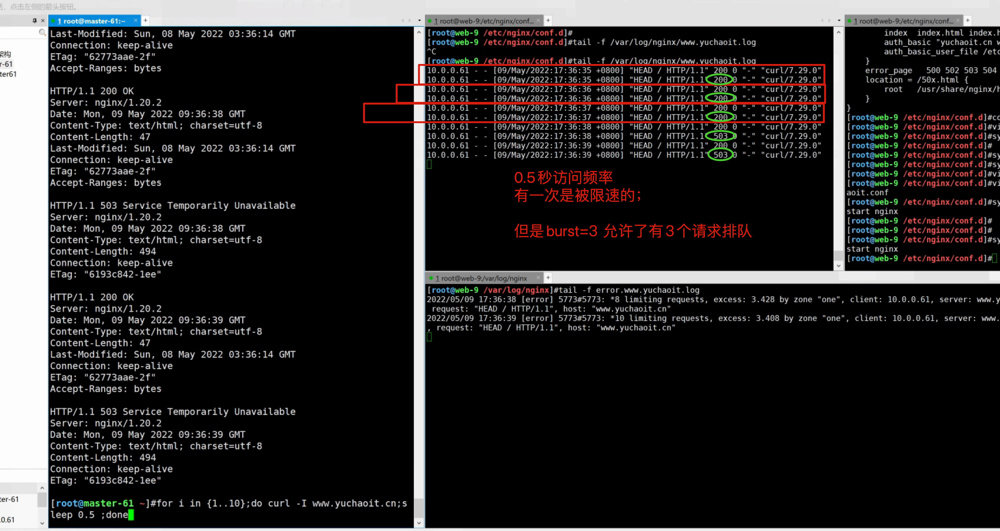
八、nginx内置变量
官网
https://nginx.org/en/docs/varindex.html
该文档还写明了，这些变量对应了哪些模块。
学这些内置nginx变量，目的是为了在配置文件中使用，如
- 日志功能会用
- url跳转时用
- 等
$args #请求中的参数值
$query_string #同 $args
$arg_NAME #GET请求中NAME的值
$is_args #如果请求中有参数，值为"?"，否则为空字符串
$uri #请求中的当前URI(不带请求参数，参数位于$args)，可以不同于浏览器传递的$request_uri的值，它可以通过内部重定向，或者使用index指令进行修改，$uri不包含主机名，如"/foo/bar.html"。
$document_uri #同 $uri
$document_root #当前请求的文档根目录或别名
$host #优先级：HTTP请求行的主机名>"HOST"请求头字段>符合请求的服务器名
$hostname #主机名
$https #如果开启了SSL安全模式，值为"on"，否则为空字符串。
$binary_remote_addr #客户端地址的二进制形式，固定长度为4个字节
$body_bytes_sent #传输给客户端的字节数，响应头不计算在内；这个变量和Apache的mod_log_config模块中的"%B"参数保持兼容
$bytes_sent #传输给客户端的字节数
$connection #TCP连接的序列号
$connection_requests #TCP连接当前的请求数量
$content_length #"Content-Length" 请求头字段
$content_type #"Content-Type" 请求头字段
$cookie_name #cookie名称
$limit_rate #用于设置响应的速度限制
$msec #当前的Unix时间戳
$nginx_version #nginx版本
$pid #工作进程的PID
$pipe #如果请求来自管道通信，值为"p"，否则为"."
$proxy_protocol_addr #获取代理访问服务器的客户端地址，如果是直接访问，该值为空字符串
$realpath_root #当前请求的文档根目录或别名的真实路径，会将所有符号连接转换为真实路径
$remote_addr #客户端地址
$remote_port #客户端端口
$remote_user #用于HTTP基础认证服务的用户名
$request #代表客户端的请求地址
$request_body #客户端的请求主体：此变量可在location中使用，将请求主体通过proxy_pass，fastcgi_pass，uwsgi_pass和scgi_pass传递给下一级的代理服务器
$request_body_file #将客户端请求主体保存在临时文件中。文件处理结束后，此文件需删除。如果需要之一开启此功能，需要设置client_body_in_file_only。如果将次文件传递给后端的代理服务器，需要禁用request body，即设置proxy_pass_request_body off，fastcgi_pass_request_body off，uwsgi_pass_request_body off，or scgi_pass_request_body off
$request_completion #如果请求成功，值为"OK"，如果请求未完成或者请求不是一个范围请求的最后一部分，则为空
$request_filename #当前连接请求的文件路径，由root或alias指令与URI请求生成
$request_length #请求的长度 (包括请求的地址，http请求头和请求主体)
$request_method #HTTP请求方法，通常为"GET"或"POST"
$request_time #处理客户端请求使用的时间; 从读取客户端的第一个字节开始计时
$request_uri #这个变量等于包含一些客户端请求参数的原始URI，它无法修改，请查看$uri更改或重写URI，不包含主机名，例如："/cnphp/test.php?arg=freemouse"
$scheme #请求使用的Web协议，"http" 或 "https"
$server_addr #服务器端地址，需要注意的是：为了避免访问linux系统内核，应将ip地址提前设置在配置文件中
$server_name #服务器名
$server_port #服务器端口
$server_protocol #服务器的HTTP版本，通常为 "HTTP/1.0" 或 "HTTP/1.1"
$status #HTTP响应代码
$time_iso8601 #服务器时间的ISO 8610格式
$time_local #服务器时间（LOG Format 格式）
$cookie_NAME #客户端请求Header头中的cookie变量，前缀"$cookie_"加上cookie名称的变量，该变量的值即为cookie名称的值
$http_NAME #匹配任意请求头字段；变量名中的后半部分NAME可以替换成任意请求头字段，如在配置文件中需要获取http请求头："Accept-Language"，$http_accept_language即可
$http_cookie
$http_post
$http_referer
$http_user_agent
$http_x_forwarded_for
$sent_http_NAME #可以设置任意http响应头字段；变量名中的后半部分NAME可以替换成任意响应头字段，如需要设置响应头Content-length，$sent_http_content_length即可
$sent_http_cache_control
$sent_http_connection
$sent_http_content_type
$sent_http_keep_alive
$sent_http_last_modified
$sent_http_location
$sent_http_transfer_encoding
九、nginx添加第三方模块
1.理念
nginx除了支持内置模块，还支持第三方模块，但是第三方模块需要重新编译进nginx。
（重新生成nginx二进制命令）
1.如你的nginx默认不支持https
2.给你的nginx添加echo模块，用于打印nginx的变量。
2.编译添加echo模块
echo-nginx-module 模块可以在Nginx中用来输出一些信息，可以用来实现简单接口或者排错。
由于网络问题，建议该模块可以手动下载，编译安装
# 1.模块网址 https://github.com/openresty/echo-nginx-module
yum -y install gcc-c++
yum -y install pcre pcre-devel
yum -y install zlib zlib-devel
yum -y install openssl openssl-devel
# 3.准备好nginx编译环境
yum install pcre pcre-devel openssl openssl-devel zlib zlib-devel gzip gcc gcc-c++ make wget httpd-tools vim -y
groupadd www -g 666
useradd www -u 666 -g 666 -M -s /sbin/nologin
mkdir -p /yuchaoit/ ; cd /yuchaoit/
# 下载echo模块
yum install git -y
git clone https://github.com/openresty/echo-nginx-module.git
# 4.编译nginx
wget http://nginx.org/download/nginx-1.19.0.tar.gz
tar -zxf nginx-1.19.0.tar.gz
cd nginx-1.19.0
./configure \
--user=www \
--group=www \
--prefix=/opt/nginx-1-19-0 \
--with-http_stub_status_module \
--with-http_ssl_module \
--with-pcre \
--add-module=/yuchaoit/echo-nginx-module
# 5.编译且安装
make && make install
# 6.创建快捷方式
ln -s /opt/nginx-1-19-0/sbin/nginx /usr/sbin/
# 7.验证模块
nginx -V
3.创建新配置文件，验证echo模块
[root@web-9 /etc/nginx/conf.d]#cat echo.conf
server {
listen 11444;
server_name localhost;
charset utf-8;
location / {
echo "yuchaoit.cn welcome you!";
echo $uri;
echo $document_uri;
echo $remote_addr;
echo $remote_port;
echo $http_user_agent;
}
}
4.客户端访问
[root@master-61 ~]#curl 10.0.0.9:11444/hello_chaoge
yuchaoit.cn welcome you!
/hello_chaoge
/hello_chaoge
10.0.0.61
42378
curl/7.29.0
十、nginx location高级实战
location是nginx的核心重要功能，可以设置网站的访问路径，一个web server会有多个路径，那么location就得设置多个。
Nginx的locaiton作用是根据用户请求的URI不同，来执行不同的应用。
针对用户请求的网站URL进行匹配，匹配成功后进行对应的操作。
官网文档
https://nginx.org/en/docs/http/ngx_http_core_module.html#location
1.语法介绍
Syntax: location [ = | ~ | ~* | ^~ ] uri { ... }
location @name { ... }
Default: —
Context: server, location
官网用法
location = / {
[ configuration A ]
}
location / {
[ configuration B ]
}
location /documents/ {
[ configuration C ]
}
location ^~ /images/ {
[ configuration D ]
}
location ~* \.(gif|jpg|jpeg)$ {
[ configuration E ]
}
测试用法，如果定义了如上的5个location，则
http://yuchaoit.cn/ 匹配A
http://yuchaoit.cn/hello 匹配B
http://yuchaoit.cn/documents/hello 匹配C
http://yuchaoit.cn/images/葫芦娃.gif 匹配D
http://yuchaoit.cn/documents/德玛西亚.gif 匹配E
2.location语法优先级
优先级从高到低
| 匹配符 | 匹配规则 | 优先级 |
|---|---|---|
| = | 定义 URI 和位置的精确匹配。 | 1 |
| ^~ | 以某个字符串开头，不检查正则 | 2 |
| ~ | 区分大小写的正则匹配 | 3 |
| ~* | 不区分大小写的正则匹配 | 4 |
3.测试location实战
# 配置文件如下
server {
listen 22333;
server_name _;
# 最低级匹配，不符合其他locaiton就来这
# 属于通用url规则
location / {
return 200 "location / \n";
}
# 优先级最高，等于号后面可以指定url
location = / {
return 200 "location = / \n";
}
#以/documents/开头的url，来这里，如符合其他locaiton，则以其他优先
location /documents/ {
return 200 "location /documents/ \n";
}
#匹配任何以/images/开头的请求，不匹配正则
location ^~ /images/ {
return 200 "location ^~ /images/ \n";
}
#匹配任何以.gif结尾的请求，支持正则
location ~* \.(gif|jpg|jpeg)$ {
return 200 "location ~* \.(gif|jpg|jpeg) \n";
}
access_log off;
}
4.客户端测试访问
[root@master-61 ~]#
# 精确匹配
[root@master-61 ~]#curl 10.0.0.9:22333
location = /
[root@master-61 ~]#
# 依然是精确匹配
[root@master-61 ~]#curl 10.0.0.9:22333/
location = /
[root@master-61 ~]#
# 没有满足的条件，因此匹配 /
[root@master-61 ~]#curl 10.0.0.9:22333/yuchaoit
location /
[root@master-61 ~]#
# 没有满足的条件，因此匹配 / ，这里注意结尾的斜线
[root@master-61 ~]#curl 10.0.0.9:22333/documents
location /
[root@master-61 ~]#
# 符合匹配规则，匹配到了location /documents/
[root@master-61 ~]#curl 10.0.0.9:22333/documents/
location /documents/
[root@master-61 ~]#
# 符合匹配规则，匹配到了location /documents/
[root@master-61 ~]#curl 10.0.0.9:22333/documents/yuchaoit.html
location /documents/
[root@master-61 ~]#
# 依然是没有符合的规则，默认匹配 /
[root@master-61 ~]#curl 10.0.0.9:22333/yuchaoit/documents/yuchaoit.html
location /
[root@master-61 ~]#
# 通过正则表示匹配内容，只要是.jpg结尾
[root@master-61 ~]#curl 10.0.0.9:22333/yuchaoit/documents/yuchaoit.jpg
location ~* \.(gif|jpg|jpeg)
[root@master-61 ~]#
# 即使前面匹配到了/documents/，但是结尾符合jpg优先级更高
[root@master-61 ~]#curl 10.0.0.9:22333/documents/yuchaoit.jpg
location ~* \.(gif|jpg|jpeg)
# 除非结尾文件名不符合，因此匹配到/documents/
[root@master-61 ~]#curl 10.0.0.9:22333/documents/yuchaoit.jpgggg
location /documents/
[root@master-61 ~]#
[root@master-61 ~]#
# 证明 ^~ 优先级 大于 ~*
[root@master-61 ~]#curl 10.0.0.9:22333/images/yuchaoit.jpgggg
location ^~ /images/
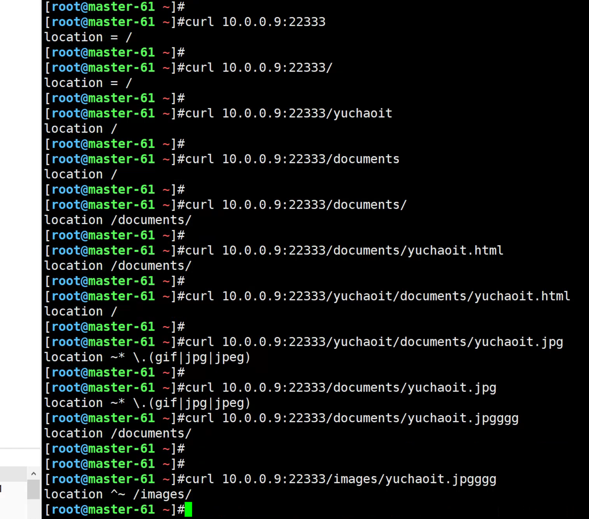
5.实际工作使用
实际工作中，会有至少3个匹配规则如下，需要同学们学习了nginx负载均衡即可理解，以及具体的网站部署实践。
# 1.必选规则，设置反向代理，官网也推荐该用法，可以加速处理，因为首页会频繁被访问
# 该location 一般直接设置反向代理，转发给后端应用服务器，或者是静态页；
location = / {
proxy_pass http://yuchaoit.cn;
}
# 2.静态文件处理，nginx强项
# 两个模式，二选一即可
# 这个表示当用户请求是 http://yuchaoit.cn/static/hello.css 这样的请求时
# 进入/www目录下，寻找static文件夹， 也就是/www/static/hello.css文件
location ^~ /static/ {
root /www/;
}
# 这个表示请求是以如下静态资源结尾的，进入到/www/下寻找该文件
#匹配任何以.gif结尾的请求，支持正则
location ~* \.(gif|jpg|jpeg|png|css|js|ico)$ {
root /www/;
}
# 3.还有就是通用规则，用于处理未定义的url，默认匹配
# 一般网站除了静态文件的请求，默认就是动态请求，因此直接转发给后端
location / {
proxy_pass http://my_django:8080/;
}
6. location的root和alias
绝大多数资料这里都讲错了。。看于超老师的真理玩法。
nginx的location路径匹配功能
1.匹配用户的url
2.匹配到之后决定动作，代理转发，或者设置网页根目录，提供静态数据。
静态页面的设置，就得设置linux中的文件路径，nginx提供了2个参数
root和alias
语法：
1.root是定义最上层目录，目录路径结尾的斜线可有可无；
2.alias是定义目录别名，结尾必须以 "/" 结束，否则找不到文件。
7.root、alias实践。
# 1.例如目前有一个静态数据目录 /static
# 静态图片数据如下
[root@web-9 /www]#ls /www/static/cai1.jpg
/www/static/cai1.jpg
# 2.前端网页html文件
[root@web-9 /www]#cat /www/index.html
welcome chaoge linux course.
<img src='/static/cai1.jpg'>
# 3.nginx测试配置文件（分别测试root、和alias两种写法）
[root@web-9 /etc/nginx/conf.d]#cat movie.yuchaoit.conf
server {
listen 80;
server_name movie.yuchaoit.cn;
charset utf-8;
access_log /var/log/nginx/movie.yuchaoit.log;
error_log /var/log/nginx/error.movie.yuchaoit.log;
error_page 404 https://error.taobao.com/app/tbhome/common/error.html;
location / {
root /www;
index index.html index.htm;
}
location /static/ {
root /www;
}
# location /static/ {
# alias /www/static/;
#}
error_page 500 502 503 504 /50x.html;
location = /50x.html {
root /usr/share/nginx/html;
}
}
8.图解root、alias
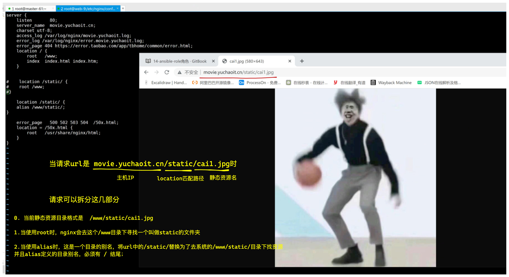
老铁们，我做的对吗？
十一、nginx rewrite跳转（高级）
官网
https://nginx.org/en/docs/http/ngx_http_rewrite_module.html
该ngx_http_rewrite_module模块用于使用 PCRE 正则表达式更改请求 URI、返回重定向和条件选择配置。
1.介绍
实际工作需求中，我们经常要修改用户url的请求
1.例如客户端默认发送是http协议，我们的网站都支持了https部署，需要将用户的http请求强制跳转到https。
2.网站自适应移动端、或者PC端，将用户请求自动跳转到移动端服务器、或者PC端服务器
例如
http://yuchaoit.cn PC端
http://m.yuchaoit.cn
3.这个功能就得通过ngx_http_rewrite_module 这个模块实现
该模块提供了多个指令功能
break # 中断配置
if # 请求判断
set # 设置变量
return # 返回值
rewrite # 对用户请求URL重写
2.指令语法（if）
1.if语句，用于条件判断，根据判断结果的不同，执行不同的动作，if写在server{}或者location{}标签里。
if (匹配条件) {
执行动作
}
2.1 匹配规则
if的匹配条件可以是如下任意一种。
条件符号
| 符号 | 作用 |
|---|---|
| = | 比较变量、字符串是否相等，相等为true、不等则为false |
| != | 比较变量、字符串是否不相等，不相等为true、相等为false |
| ~ | 区分大小写的正则匹配，匹配上为true，否则为false |
| !~ | 区分大小写的正则匹配，不匹配上为true，否则为false |
| ~* | 不区分大小写的正则匹配，匹配上为true，否则为false |
| !~* | 不区分大小写的正则匹配，不匹配上为true，否则为false |
条件参数
| 符号 | 作用 |
|---|---|
| -f 和 !-f | 请求的文件是否存在 |
| -d 和 !-d | 判断的目录是否存在 |
| -e 和 !-e | 判断的文件、目录、软连接是否存在 |
| -x 和 !-x | 判断的请求文件是否有有执行权限 |
2.2 创建测试配置文件(if)
针对不同的情况进行判断，动作设置。
server {
# 客户端完全匹配到
listen 22555;
server_name localhost;
root html;
charset utf-8;
location /test-if {
# 客户端类型完全匹配到 huawei
if ($http_user_agent = huawei){
echo "agent is huawei";
}
# 客户端类型区分大小写
if ($http_user_agent ~ Iphone) {
echo "agent is Iphone";
}
# 客户端类型不区分大小写
if ($http_user_agent ~* Chrome) {
echo "agent is Chrome";
}
# 如果请求方法不是GET就提示 ”只能用GET方法，你这个烂玩家“
if ($request_method != GET) {
echo "必须是GET方法，你这个烂玩家";
}
# 如果是IE浏览器，直接提示 "不支持IE，请下载Chrome浏览器"
# 不区分大小写的正则匹配
if ($http_user_agent ~* IE){
echo "不支持IE，请下载Chrome浏览器";
}
# 如果上面没有任何匹配，执行如下语句
echo "if规则没有匹配到";
echo "agent is >>>>>> $http_user_agent";
echo "request_method is >>>>>>>> $request_method";
}
}
2.3 测试访问
默认访问，没有匹配到if规则
[root@master-61 ~]#curl 10.0.0.9:22555/test-if
if规则没有匹配到
agent is >>>>>> curl/7.29.0
request_method is >>>>>>>> GET
[root@master-61 ~]#
测试完全匹配
[root@master-61 ~]#curl -A 'huawei' 10.0.0.9:22555/test-if
agent is huawei
[root@master-61 ~]#
[root@master-61 ~]#curl -A 'huaweiiiii' 10.0.0.9:22555/test-if
if规则没有匹配到
agent is >>>>>> huaweiiiii
request_method is >>>>>>>> GET
测试区分大小写的正则匹配
[root@master-61 ~]#curl -A 'Iphone' 10.0.0.9:22555/test-if
agent is Iphone
[root@master-61 ~]#
[root@master-61 ~]#curl -A 'iphone' 10.0.0.9:22555/test-if
if规则没有匹配到
agent is >>>>>> iphone
request_method is >>>>>>>> GET
[root@master-61 ~]#curl -A 'aaaaaiphone' 10.0.0.9:22555/test-if
if规则没有匹配到
agent is >>>>>> aaaaaiphone
request_method is >>>>>>>> GET
[root@master-61 ~]#curl -A 'aaaaaIphone' 10.0.0.9:22555/test-if
agent is Iphone
[root@master-61 ~]#curl -A 'aaaaaIphonebbbbbb' 10.0.0.9:22555/test-if
agent is Iphone
测试不区分大小写的正则匹配
[root@master-61 ~]#curl -A 'Chrome' 10.0.0.9:22555/test-if
agent is Chrome
[root@master-61 ~]#
[root@master-61 ~]#
[root@master-61 ~]#curl -A 'chrome' 10.0.0.9:22555/test-if
agent is Chrome
[root@master-61 ~]#curl -A 'aaaaaaaChrome' 10.0.0.9:22555/test-if
agent is Chrome
[root@master-61 ~]#curl -A 'BBBBBbaaaaaaaChrome' 10.0.0.9:22555/test-if
agent is Chrome
[root@master-61 ~]#curl -A 'BBBBBbaaaaaaaChromeCCCC' 10.0.0.9:22555/test-if
agent is Chrome
[root@master-61 ~]#curl -A 'BBBBBbaaaaaaaChrComeCCCC' 10.0.0.9:22555/test-if
if规则没有匹配到
agent is >>>>>> BBBBBbaaaaaaaChrComeCCCC
request_method is >>>>>>>> GET
测试请求方法POST
curl默认就是GET方法
curl -X method --data '数据'
[root@master-61 ~]#curl -X POST --data '{"name":"chaoge01"}' 10.0.0.9:22555/test-if
必须是GET方法，你这个烂玩家
测试浏览器、分别用IE浏览器、Chrome测试。
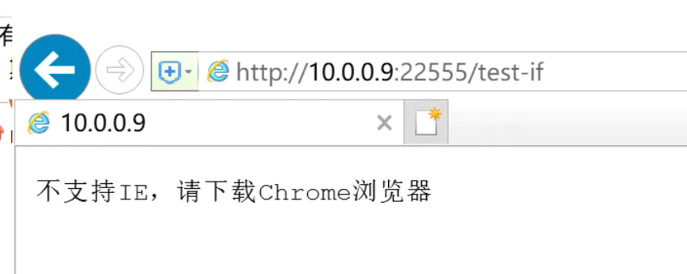
3.指令（return）
https://nginx.org/en/docs/stream/ngx_stream_return_module.html
The ngx_stream_return_module module (1.11.2) allows sending a specified value to the client and then closing the connection.
Example Configuration
server {
listen 12345;
return $time_iso8601;
}
Syntax: return value;
Default: —
Context: server
Specifies a value to send to the client. The value can contain text, variables, and their combination.
指定要发送到客户端的值。 该值可以包含文本、变量及其组合。
指令说明
return用于返回如状态码
或者重写url
或者响应状态码、以及文本等
return之后的命令不会再执行。
3.1 return用法
return 可以用于 server {} ； location {} ； if {}；
return code [text];
return code url;
return url;
3.2 配置文件
[root@web-9 /etc/nginx/conf.d]#cat return.conf
server {
listen 22666;
server_name _;
root html;
# 精确匹配，客户端只访问了网页根目录
location = / {
echo "welcome to chaoge linux course.";
}
location /test-return {
# 客户端完全匹配
if ($http_user_agent = huawei){
return 200 "agent is $http_user_agent \n";
}
# 限制必须是GET方法
if ($request_method != GET){
return 405 "必须是GET方法！其他方法不允许\n";
}
# 如果是IE浏览器，就重定向
if ($http_user_agent ~* IE){
return 301 http://yuchaoit.cn/cai.jpg;
}
# 没有if条件匹配到
return 404 "sorry, nothing ....\n";
}
# 默认匹配，如果没有匹配到任意内容，跳转到首页 jd.com就是这个做法
location / {
return 301 http://yuchaoit.cn/cai.jpg;
}
location /ji {
return 500 "鸡你太美\n";
}
}
3.3 测试访问
精确匹配访问
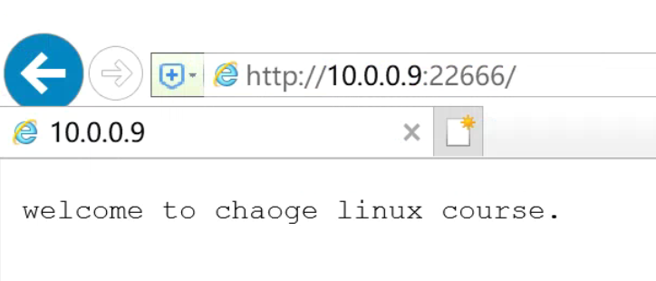
随便输入url，访问错误的内容
10.0.0.9:22666/qweqweqweqweqwe
默认会跳转301，页面重定向
设置访问客户端
[root@master-61 ~]#curl 10.0.0.9:22666/test-return
sorry, nothing ....
精确完全匹配
[root@master-61 ~]#curl -A 'huawei' 10.0.0.9:22666/test-return
agent is huawei
[root@master-61 ~]#
[root@master-61 ~]#
[root@master-61 ~]#curl -A 'aaahuawei' 10.0.0.9:22666/test-return
sorry, nothing ....
不允许POST方法
[root@master-61 ~]#curl -X POST 10.0.0.9:22666/test-return
必须是GET方法！其他方法不允许
测试用ie浏览器访问
10.0.0.9:22666/test-return 请求都会被重定向
测试访问/ji 路径，返回500状态码，以及字符串
[root@master-61 ~]#curl 10.0.0.9:22666/ji -I
HTTP/1.1 500 Internal Server Error
Server: nginx/1.19.0
Date: Tue, 10 May 2022 07:57:42 GMT
Content-Type: application/octet-stream
Content-Length: 13
Connection: keep-alive
[root@master-61 ~]#
[root@master-61 ~]#curl 10.0.0.9:22666/ji
鸡你太美
4.set指令
1.语法
set就是用于设置一个nginx变量，这个值可以是文本、变量或者其组合。
set可以用于设置server{} location{} if{}
set 变量名 变量值；
2.配置文件
server {
listen 22777;
server_name _;
root html;
set $my_url http://yuchaoit.cn/cai.jpg;
location /test-set {
return 301 $my_url;
}
}
3.测试访问
浏览器访问10.0.0.9:22777/test-set 会自动被重定向
5.指令（break）
1.语法
break用于终止所在区域的后续指令，且只针对ngx_http_rewrite_module提供的模块指令；
也就是咱们目前所学的这几个rewrite相关的指令，在break后面不会执行了。
break可以用于
server{}
location{}
if{}
2.配置文件
server {
listen 22888;
server_name _;
root html;
location / {
set $my_website yuchaoit.cn;
echo "welcome to my website:" $my_website;
break;
set $my_name yuchao;
echo "my name is" $my_name;
}
}
3.执行结果
[root@master-61 ~]#curl 10.0.0.9:22888
welcome to my website: yuchaoit.cn
my name is
发现break后续的 set指令并未正确执行。
6.rewrite指令（工作必需品）
官网
https://nginx.org/en/docs/http/ngx_http_rewrite_module.html#rewrite
句法： rewrite regex replacement [flag];
默认： —
语境： server, location,if
6.1 指令语法
1. rewrite指令可以基于用户的请求url，再通过正则表达式的匹配情况，进行地址重写；
2. rewrite指令可以写多条，按照顺序依次执行；
3. rewrite指令可以根据flag标记进行进一步处理（last、break、redirect、permanent）
6.2 flag参数解释
可选flag参数可以是以下之一：
last
停止处理当前的 ngx_http_rewrite_module指令集，向下匹配新的locaiton URI规则；
break
ngx_http_rewrite_module与break指令一样， 停止处理当前的指令集 ；
redirect（公司的域名临时更换）
返回带有 302 代码的临时重定向；
如果替换字符串不以“ http://”、“ https://”或“ $scheme”开头，则使用该字符串；
浏览器将显示跳转后的url地址，且浏览器不会做dns缓存记录；
permanent（公司域名永久更换，老域名还在运行）
返回带有 301 代码的永久重定向。
浏览器会记录跳转后的dns缓存，浏览器显示跳转后的url。
6.3工作应用场景
1.设置redirect、permanent参数，浏览器都会更改为跳转后的url，是由服务器返回新的URL，客户端对这个URL重新发起了请求。
2.设置last和break参数，浏览器依然显示原本的URL，由于服务器内部完成跳转。
3.last和break区别
last在标记完本次规则匹配完成后，对其所在的server{}标签重新发起修改后的URL请求，再次匹配location{}。
break是在本条规则匹配完毕后，终止匹配，不再匹配后面的location{}；
6.4 redirect和permanent实战
permanent和301永久重定向
HTTP协议规范里，301是永久重定向、302是临时重定向。
工作场景
- 公司的旧域名需要永久跳转到新域名。
www.pythonav.cn
↓
www.yuchaoit.cn
状态码为301.
旧网站配置文件
# 0.注意要做好本地dns解析
10.0.0.9 www.pythonav.cn www.yuchaoit.cn
# 1.创建测试数据
mkdir -p /pythonav
echo "i am pythonav " > /pythonav/index.html
# 2.配置文件
cat /etc/nginx/conf.d/pythonav.conf
server {
listen 80;
server_name www.pythonav.cn;
location / {
root /pythonav/;
index index.html;
rewrite / http://www.yuchaoit.cn permanent;
}
}
# 3.重启
systemctl restart nginx
新网站配置文件
# 0.注意要做好本地dns解析
10.0.0.9 www.pythonav.cn www.yuchaoit.cn
# 1.创建测试数据
mkdir -p /www.yuchaoit.cn/
echo 'i am www.yuchaoit.cn' > /www.yuchaoit.cn/index.html
# 2.配置文件
[root@web-9 /etc/nginx/conf.d]#cat www.yuchaoit.cn.conf
server {
listen 80;
server_name www.yuchaoit.cn;
location / {
root /www.yuchaoit.cn/;
index index.html;
}
}
3.重启
systemctl restart nginx
测试访问
做好dns解析
10.0.0.9 www.pythonav.cn www.yuchaoit.cn
1.并且你会发现浏览器中提示的是 disk cache，表示这个域名做了dns缓存
2.新域名的请求提示是304，表示请求正确，但是这个文件没有任何变化
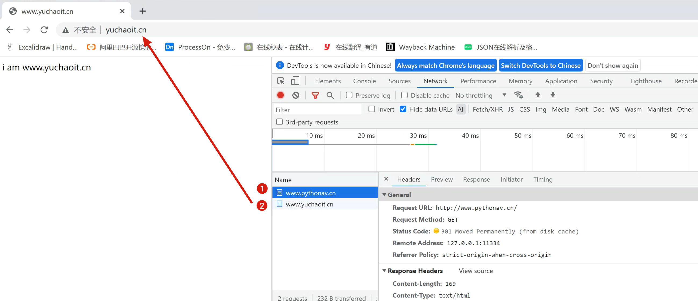
公司的旧网站 www.pythonav.cn依然提供访问，但是用户访问后，自动跳转到了新网站
www.yuchaoit.cn
且浏览器状态码是301，显示永久重定向，就是这个旧网站已经被弃用了，自动跳转了新的。
使用场景又比如
1. 用户输入 非www的网址(yuchaoit.cn)，自动重定向到www.yuchaoit.cn
2. http跳转https
3. 域名更换
6.5 redrict 302临时跳转
302临时跳转，用于因为某些原因，域名要临时跳转，旧的网站url还是会继续使用的，例如公司搞了一个活动页面等，活动结束后要取消这个跳转。
302临时跳转需求
用户访问www.yuchaoit.cn 需要临时跳转到party.yuchaoit.cn
旧配置文件
[root@web-9 /etc/nginx/conf.d]#cat www.yuchaoit.cn.conf
server {
listen 80;
server_name www.yuchaoit.cn;
location / {
root /www.yuchaoit.cn/;
index index.html;
rewrite / http://party.yuchaoit.cn redirect;
}
}
新配置文件
# 1.创建测试数据
mkdir -p /party.yuchaoit.cn/
echo 'i am party.yuchaoit.cn' > /party.yuchaoit.cn/index.html
# 2.配置文件
server {
listen 80;
server_name party.yuchaoit.cn;
location / {
root /party.yuchaoit.cn/;
index index.html;
}
}
# 3.重启服务
systemctl restart nginx
客户端测试302跳转
1.做好dns解析
10.0.0.9 www.pythonav.cn www.yuchaoit.cn party.yuchaoit.cn
2.浏览器测试
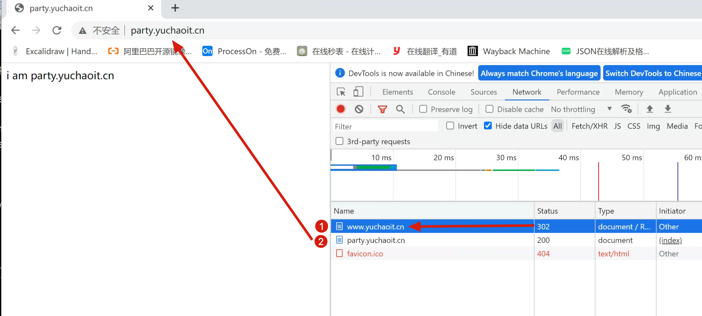
发生了302跳转，表示临时重定向
并且没有看到disk cache，表示并未做dns缓存
6.6 break和last实践
last实验
再来看语法
2.设置last和break参数，浏览器依然显示原本的URL，由于服务器内部完成跳转。
3.last和break区别
last在标记完本次规则匹配完成后，对其所在的server{}标签重新发起修改后的URL请求，再次匹配location{}。
break是在本条规则匹配完毕后，终止匹配，不再匹配后面的location{}；
测试需求
可以从 location {} > location {} > location {}
多次匹配。
访问AAA、重写到BBB、重写到CCC，且是服务器内部跳转。
配置文件
- 访问AAA
- 服务器内部跳转BBB
- 最后跳转到CCC
# 创建测试数据，用于查看url内部跳转效果，以及保持了url的参数
# 1.创建测试数据
mkdir -p /www/
echo 'i am ccc, how are you ~~~' > /www/hello.html
# 2.配置文件
server {
listen 30000;
server_name _;
#
location /CCC {
alias /www/;
}
location /BBB {
rewrite ^/BBB/(.*)$ /CCC/$1 last;
}
location /AAA {
rewrite ^/AAA/(.*)$ /BBB/$1 last;
}
}
last测试
访问以/AAA/路径开头的url即可
[root@master-61 ~]#curl 10.0.0.9:30000/AAA/hello.html
i am ccc, how are you ~~~
[root@master-61 ~]#curl 10.0.0.9:30000/BBB/hello.html
i am ccc, how are you ~~~
[root@master-61 ~]#
[root@master-61 ~]#curl 10.0.0.9:30000/CCC/hello.html
i am ccc, how are you ~~~
[root@master-61 ~]#
[root@master-61 ~]#curl 10.0.0.9:30000/DDD/hello.html
<html>
<head><title>404 Not Found</title></head>
<body>
<center><h1>404 Not Found</h1></center>
<hr><center>nginx/1.19.0</center>
</body>
</html>
可以证明last会向下匹配。
break实验
break是在本条规则匹配完毕后，终止匹配，不再匹配后面的location{}；
表示中断匹配，访问到AAA资源后，只rewrite跳转一次，终止后续的跳转。
# 创建测试数据，用于查看url内部跳转效果，以及保持了url的参数
# 2.配置文件
server {
listen 31000;
server_name _;
#
location /CCC {
root /www/;
index index.html;
}
location /BBB {
root /www/;
index index.html;
rewrite ^/BBB/(.*)$ /CCC/$1 last;
}
location /AAA {
root /www/;
index index.html;
rewrite ^/AAA/(.*)$ /BBB/$1 break;
}
}
注意点，这里的配置文件使用的是root参数
root参数设置的规则是，去root定义的目录下，寻找对应的该目录。
因此得在/www目录下，创建对应的文件夹
mkdir -p /www/{AAA,BBB,CCC}
echo 'AAA' > /www/AAA/index.html
echo 'BBB' > /www/BBB/index.html
echo 'CCC' > /www/CCC/index.html
测试访问
访问AAA路径
[root@web-9 /etc/nginx/conf.d]#curl 10.0.0.9:31000/AAA/index.html
BBB
6.7 生产rewrite实践（一）
公司的博客url连接，旧的如下
www.yuchaoit.cn/blog
现在业务变更，需要添加三级域名为 blog.yuchaoit.cn，需要将www.yuchaoit.cn/blog这个url的请求，转发给blog.yuchaoit.cn
例如
http://www.yuchaoit.cn/blog/login
http://www.yuchaoit.cn/blog/hello-world
都会跳转到
http://blog.yuchaoit.cn/login
http://blog.yuchaoit.cn/hello-world.html
配置文件(www官网配置)
# 1.配置文件
server {
listen 80;
server_name www.yuchaoit.cn;
charset utf-8;
location / {
root /www/;
index index.html;
}
# 针对旧域名进行url重写
# 匹配/blog/路径，然后rewrite
location /blog/ {
# 使用正则表达式，提取url参数
rewrite ^/blog/(.*)$ http://blog.yuchaoit.cn/$1 redirect;
}
}
# 2.测试数据
echo 'hello ,i am www 官网 ~~~~~~~' > /www/index.html
# 3.重启服务
systemctl restart nginx
配置文件（blog业务配置）
# 1.配置文件
# 1.配置文件
server {
listen 80;
server_name blog.yuchaoit.cn;
charset utf-8;
location / {
root /blog/;
index index.html;
}
}
# 2.创建测试数据
mkdir -p /blog
echo 'hello ,i am blog 博客 ~~~~~~~' > /blog/index.html
# 3.重启服务
systemctl restart nginx
测试访问
1.做好dns解析
10.0.0.9 www.pythonav.cn www.yuchaoit.cn blog.yuchaoit.cn
默认页面，location匹配返回官网页面。
访问blog路径
http://www.yuchaoit.cn/blog/index.html
查看是否会跳转
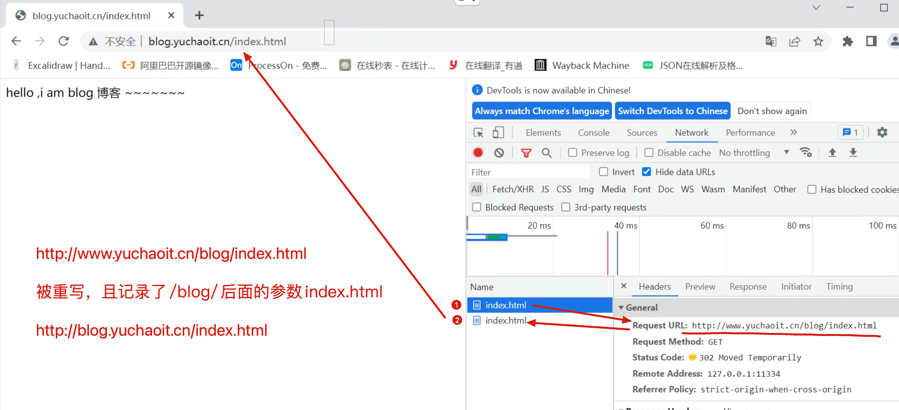
6.8 生产rewrite实践（二）
用户访问
http://www.yuchaoit.cn:80
但是现在该网站添加了支付功能，为了保证http数据传输安全，添加上https证书对数据加密，
因此必须改为访问
https://www.yuchaoit.cn:443
但是你又不能强制性要求用户每次都访问
https://xxxxx
所以你服务端必须做好跳转。
1.创建证书
1.网站的证书应该是由权威企业颁发，这样浏览器才能信任，自建的证书，只是在内网环境下使用。
mkdir /etc/nginx/ssl_key
cd /etc/nginx/ssl_key
# 输入2次密码 chaoge666
# openssl创建私钥文件 server.key，基于rsa算法，生成的 私钥长度是2048
openssl genrsa -idea -out server.key 2048
# 自己颁发证书，crt是证书的后缀名称，以及设置证书的有效期是100年，以及证书的算法等
# 然后填入证书对应的网站信息，如国家，公司名，邮箱等
[root@web-9 /etc/nginx/ssl_key]#openssl req -days 36500 -x509 -sha256 -nodes -newkey rsa:2048 -keyout server.key -out server.crt
Generating a 2048 bit RSA private key
..........................................................+++
................+++
writing new private key to 'server.key'
-----
You are about to be asked to enter information that will be incorporated
into your certificate request.
What you are about to enter is what is called a Distinguished Name or a DN.
There are quite a few fields but you can leave some blank
For some fields there will be a default value,
If you enter '.', the field will be left blank.
-----
Country Name (2 letter code) [XX]:CN
State or Province Name (full name) []:BJ
Locality Name (eg, city) [Default City]:BJ
Organization Name (eg, company) [Default Company Ltd]:yuchaoit
Organizational Unit Name (eg, section) []:yuchaoit
Common Name (eg, your name or your server's hostname) []:yuchaoit
Email Address []:yc_uuu@163.com
3. 确认生成了证书文件
[root@web-9 /etc/nginx/ssl_key]#ll -h
total 8.0K
-rw-r--r-- 1 root root 1.4K May 10 20:24 server.crt
-rw-r--r-- 1 root root 1.7K May 10 20:24 server.key
此时自建的一个证书就可以使用了
2.nginx配置文件支持https
# 配置文件
[root@web-9 /etc/nginx/ssl_key]#cat /etc/nginx/conf.d/ssl.conf
server {
listen 443 ssl;
server_name www.yuchaoit.cn;
ssl_certificate /etc/nginx/ssl_key/server.crt;
ssl_certificate_key /etc/nginx/ssl_key/server.key;
charset utf-8;
location / {
root /www;
index index.html;
}
}
# 创建测试数据
[root@web-9 /etc/nginx/ssl_key]#cat /www/index.html
hello ,i am www 官网 ~~~~~~~
3.重启nginx，访问https
http://www.yuchaoit.cn/
https://www.yuchaoit.cn/
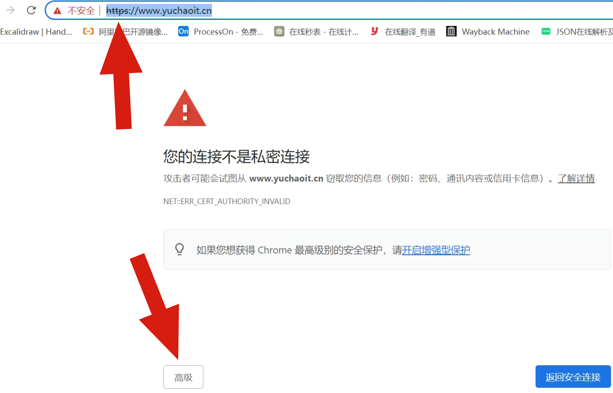
点击高级继续访问
此时网站已经是支持https的了，但是浏览器并不信任，因此你需要去阿里云购买一个公网信任的证书即可。
4.配置https自动跳转
配置默认的80官网，跳转到https即可。
[root@web-9 /etc/nginx/conf.d]#cat www.conf
server {
listen 80;
server_name www.yuchaoit.cn;
charset utf-8;
rewrite ^(.*) https://$server_name$1 redirect;
}
5.打开无痕浏览器，查看访问
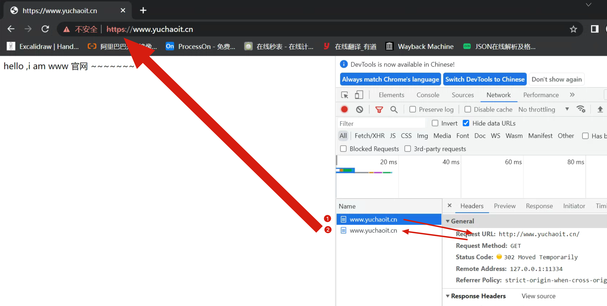
6.9 开启nginxrewrite重写日志功能
能很清晰帮帮主你调试rewrite的结果，非常好用。
error_log /data/log/nginx/error.log notice;
rewrite_log on;